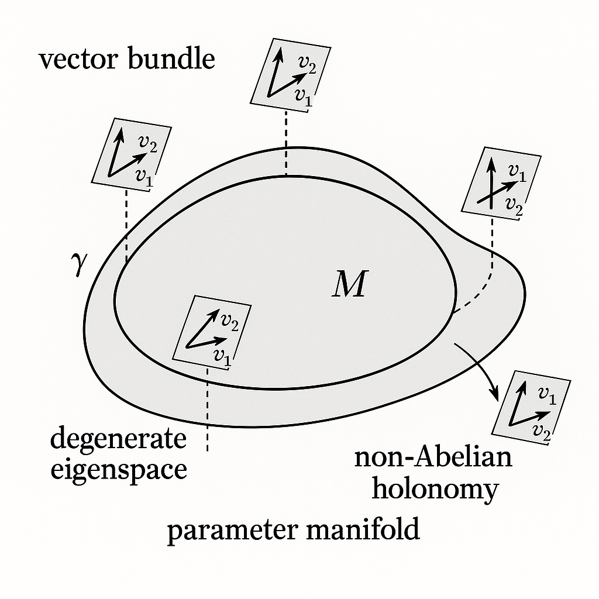
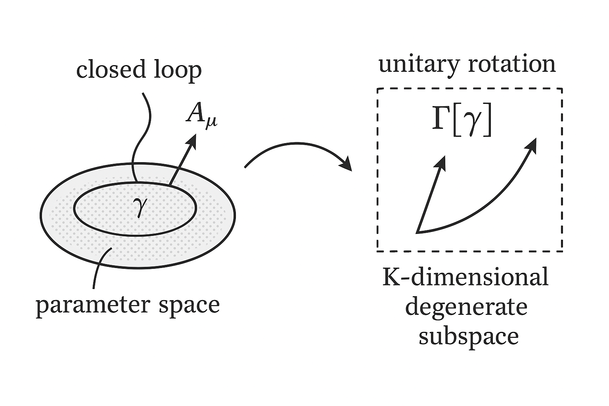
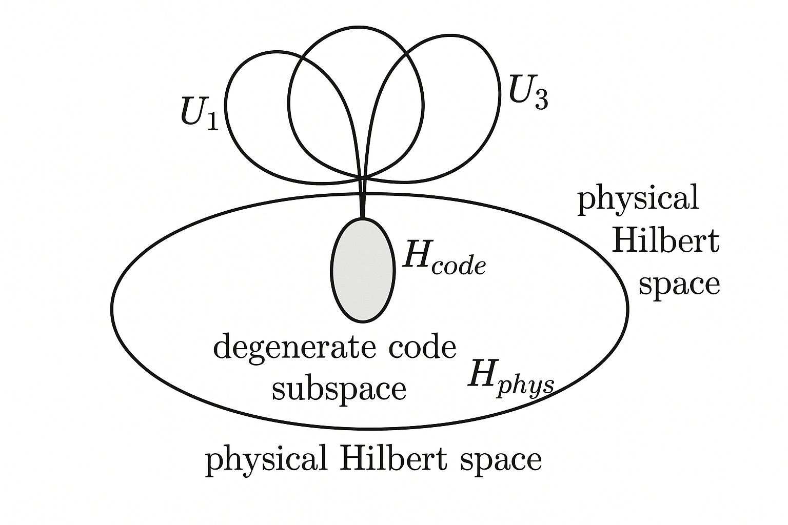
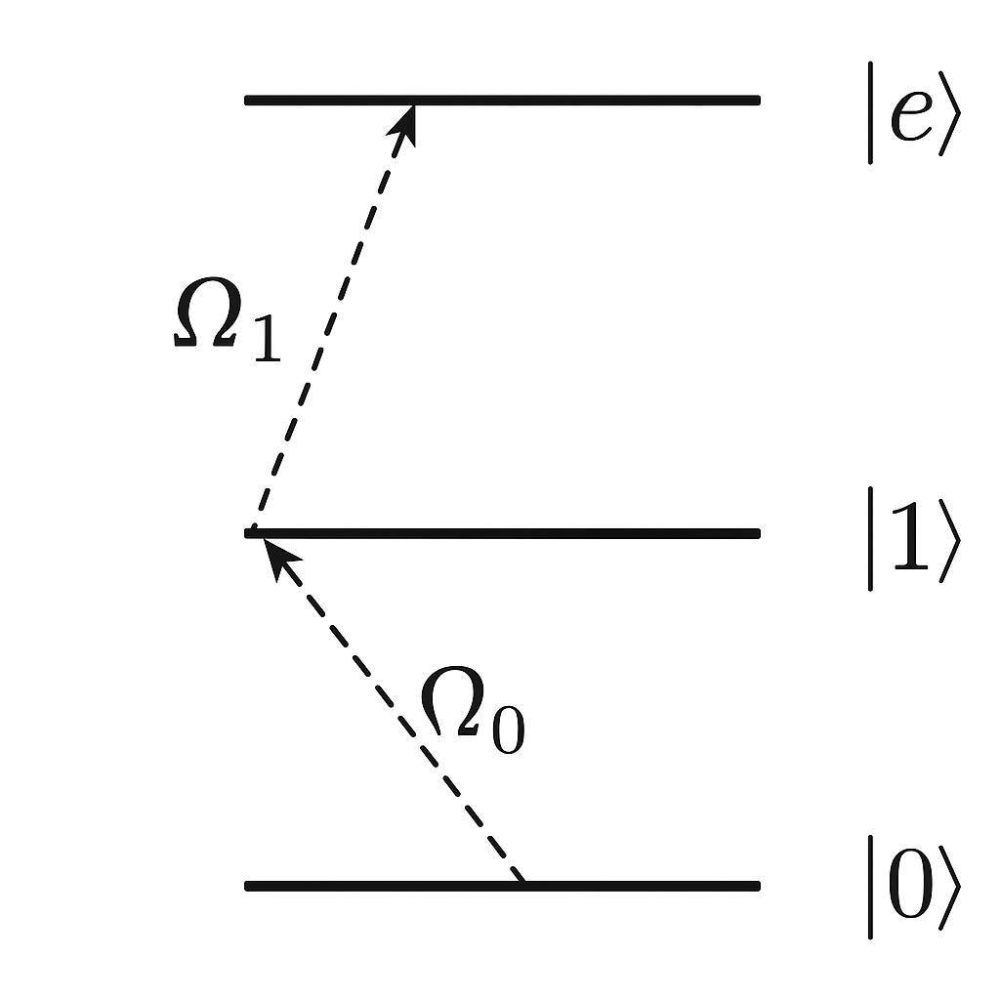
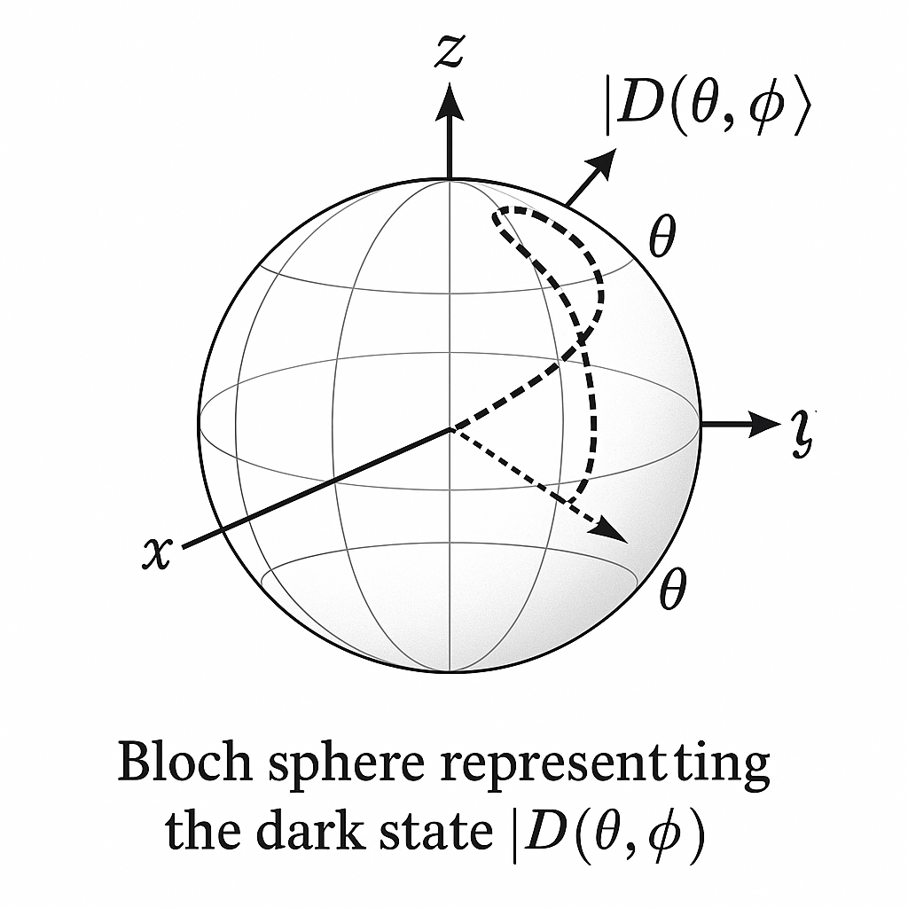
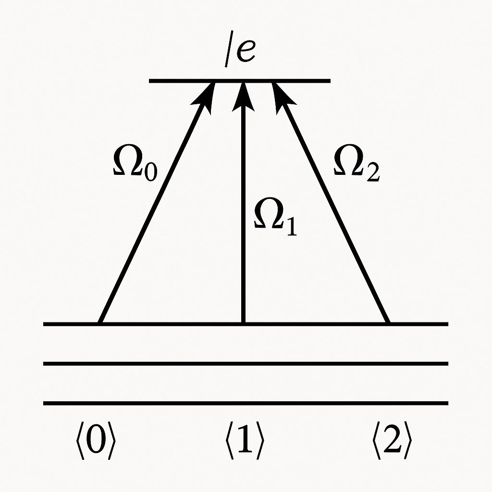
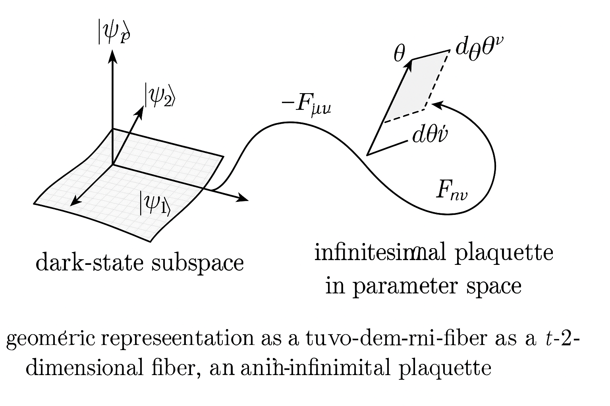
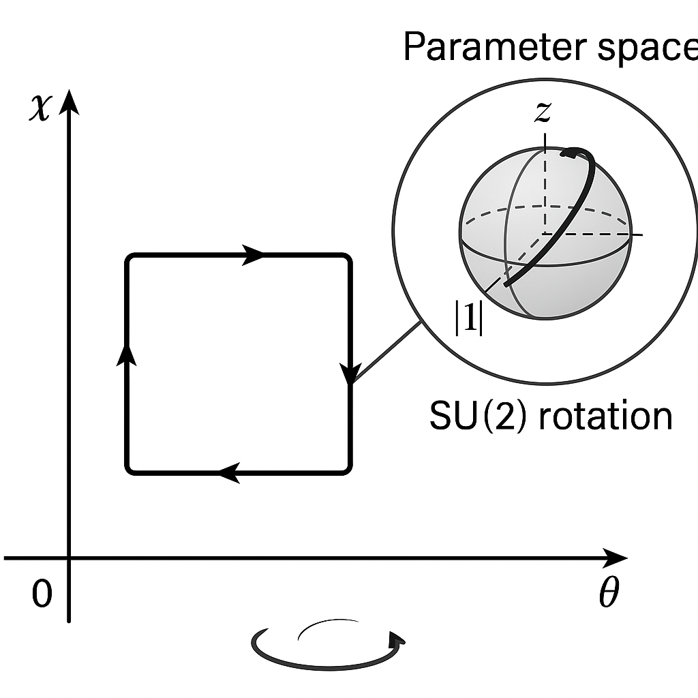
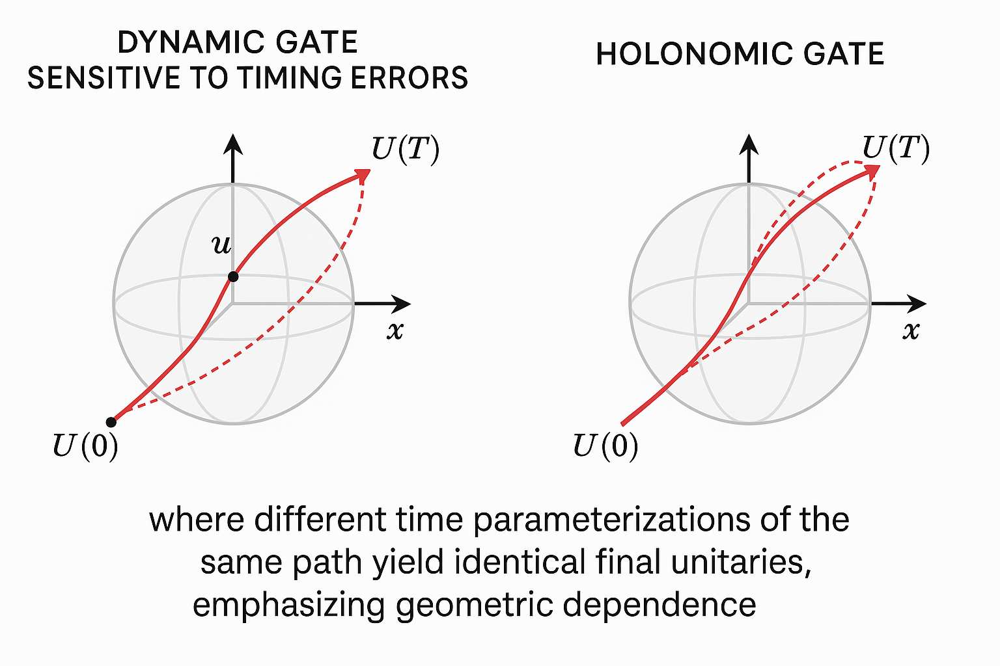
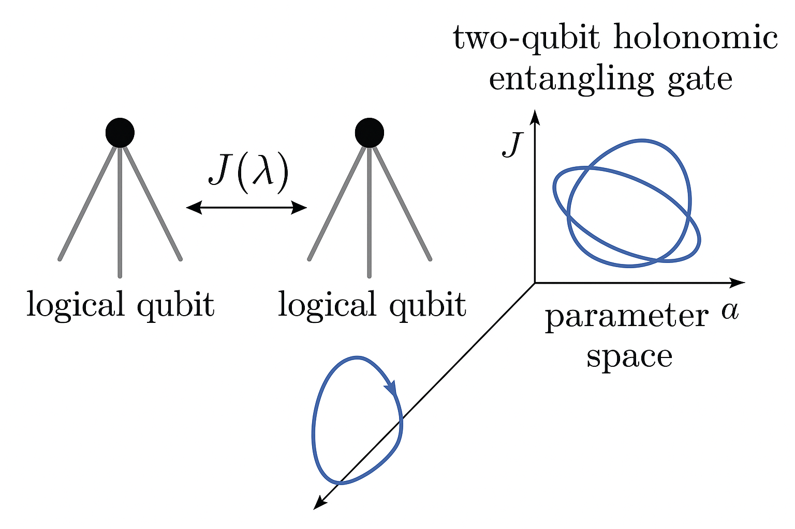

Generated by ChatGPT on 2025-12-11
逐字稿下載：ChatGPT_zh_L03_第_3_講_Holonomic_Quantum_Computation主題_3.txt
完整音檔：
Segment 1:
Segment 2:
Segment 3:
Segment 4:
Segment 5:
Segment 6:
Segment 7:
Segment 8:
Segment 9:
Segment 10:
Segment 11:
Segment 12:
Segment 13:
本講承接前兩講，聚焦於 非阿貝爾幾何相位（Wilczek–Zee 相位） 在 Holonomic Quantum Computation（HQC）中的實作與通用量子計算能力。我們將：
本講目標是讓讀者能夠：
考慮一族依賴於控制參數 \(\lambda \in \mathcal{M}\) 的哈密頓量： \[ H(\lambda), \qquad \lambda = (\lambda^1, \lambda^2, \dots, \lambda^d) \] 其中 \(\mathcal{M}\) 為控制參數流形（manifold）。假設在某一能階 \(E(\lambda)\) 上存在 有限維退化子空間： \[ H(\lambda)\, \ket{\phi_a(\lambda)} = E(\lambda)\, \ket{\phi_a(\lambda)}, \quad a = 1,\dots, K, \] 並且對每一個 \(\lambda\)，\(\{ \ket{\phi_a(\lambda)}\}_{a=1}^K\) 形成一組規範化正交基底： \[ \braket{\phi_a(\lambda) | \phi_b(\lambda)} = \delta_{ab}. \]
這個 \(K\) 維的退化本徵空間在參數空間上形成一個向量叢（vector bundle）： \[ \mathcal{E} \to \mathcal{M}, \qquad \lambda \mapsto \mathcal{H}_\lambda = \text{span}\{\ket{\phi_a(\lambda)}\}. \] 若我們在參數空間中沿著一條閉合路徑 \[ \gamma: [0,T] \to \mathcal{M}, \quad t \mapsto \lambda(t), \quad \lambda(0) = \lambda(T), \] 做 絕熱演化，初始位於該退化子空間的量子態便會在此子空間內做一個 單位ary變換，該變換恰為「幾何起源」的非阿貝爾 holonomy。

令系統哈密頓量沿著路徑 \(\lambda(t)\) 緩慢變化，滿足絕熱條件，使得態始終停留在該退化能階上。將量子態 \(\ket{\psi(t)}\) 展開在瞬時退化本徵基底上： \[ \ket{\psi(t)} = \sum_{a=1}^K c_a(t)\, e^{-\frac{i}{\hbar}\int_0^t E(\lambda(t'))dt'} \,\ket{\phi_a(\lambda(t))}. \] 將此展開帶入時間依賴 Schrödinger 方程： \[ i\hbar \frac{d}{dt}\ket{\psi(t)} = H(\lambda(t)) \ket{\psi(t)}, \] 得到 \[ i\hbar \sum_a \dot{c}_a(t) e^{-\frac{i}{\hbar}\int_0^t E dt'} \ket{\phi_a} + i\hbar \sum_a c_a(t) e^{-\frac{i}{\hbar}\int_0^t E dt'} \frac{d}{dt}\ket{\phi_a} = E(\lambda(t)) \sum_a c_a(t)\, e^{-\frac{i}{\hbar}\int_0^t E dt'}\ket{\phi_a}. \]
將 \(E(\lambda(t))\) 對應的動力學相位因子約掉，投影到退化子空間上，利用 \(\braket{\phi_b|\phi_a}=\delta_{ba}\)，可得： \[ i\hbar \dot{c}_b(t) + i\hbar \sum_a c_a(t)\, \braket{\phi_b(\lambda(t))|\dot{\phi}_a(\lambda(t))} = 0, \] 或 \[ \dot{c}_b(t) = - \sum_a c_a(t)\, \braket{\phi_b(\lambda(t))|\dot{\phi}_a(\lambda(t))}. \]
定義非阿貝爾「連接」（connection）矩陣： \[ \bigl(A_\mu(\lambda)\bigr)_{ba} = i\, \braket{\phi_b(\lambda)|\partial_\mu \phi_a(\lambda)}, \qquad \partial_\mu \equiv \frac{\partial}{\partial \lambda^\mu}, \] 則 \[ \braket{\phi_b|\dot{\phi}_a} = \sum_\mu \dot{\lambda}^\mu \braket{\phi_b|\partial_\mu \phi_a} = -i \sum_\mu \dot{\lambda}^\mu (A_\mu)_{ba}. \] 於是演化方程變成 \[ \dot{c}_b(t) = i \sum_{a,\mu} \dot{\lambda}^\mu(t) (A_\mu(\lambda(t)))_{ba}\, c_a(t). \] 以矩陣記號寫成 \[ \dot{\mathbf{c}}(t) = i \sum_\mu \dot{\lambda}^\mu(t)\, A_\mu(\lambda(t))\, \mathbf{c}(t), \] 其中 \(\mathbf{c}(t)\) 為 \(K\) 維向量，\(A_\mu\) 是 \(K\times K\) 反 Hermitian 矩陣（因為 connection 是 \(u(K)\) Lie 代數值）。
對上述微分方程積分，可得在時間 \(T\) 的係數向量： \[ \mathbf{c}(T) = \mathcal{P} \exp\left(i\int_0^T dt\, \dot{\lambda}^\mu(t) A_\mu(\lambda(t))\right) \mathbf{c}(0), \] 其中 \(\mathcal{P}\) 表示路徑排序（path ordering）。令 \[ \Gamma[\gamma] = \mathcal{P} \exp\left(i\int_\gamma A_\mu(\lambda)\, d\lambda^\mu\right) \] 則 \(\Gamma[\gamma] \in U(K)\) 即為非阿貝爾幾何相位（holonomy），其作用於退化子空間上的量子態： \[ \ket{\psi(T)} = e^{-\frac{i}{\hbar} \int_0^T E(\lambda(t))dt}\, \Gamma[\gamma] \ket{\psi(0)}. \] 因此，在絕熱極限下，退化本徵子空間的動力學演化由動力學相位與幾何 holonomy 的乘積構成。
若可以設計參數空間上的閉合路徑 \(\gamma\)，使得 \(\Gamma[\gamma]\) 等於我們希望實作的量子邏輯閘 \(U_\text{gate}\)，則在該退化子空間上即可實現 純幾何性的量子門。

基底 \(\{\ket{\phi_a(\lambda)}\}\) 並非唯一，我們可以在每一點 \(\lambda\) 對退化子空間做一個單位ary變換： \[ \ket{\phi_a(\lambda)} \to \ket{\phi'_a(\lambda)} = \sum_b \ket{\phi_b(\lambda)}\, U_{ba}(\lambda), \quad U(\lambda) \in U(K). \] 在此規範轉換（gauge transformation）下，connection 轉換為 \[ A'_\mu = U^{-1} A_\mu U + i U^{-1}\partial_\mu U. \] 這與 Yang–Mills 規範場的變換律完全相同。曲率張量（field strength）定義為 \[ F_{\mu\nu} = \partial_\mu A_\nu - \partial_\nu A_\mu - i [A_\mu, A_\nu], \] 在規範轉換下 \[ F'_{\mu\nu} = U^{-1} F_{\mu\nu} U. \] 因此，曲率的譜（例如跡或不變量）是規範不變的物理量。
當 \(K=1\) 時，connection 與曲率皆退化為 U(1) Berry 連接與 Berry 曲率，此時 holonomy 變成一道乘法相位： \[ \Gamma[\gamma] = \exp\left(i \oint_\gamma \mathcal{A}_\mu d\lambda^\mu\right), \quad \mathcal{A}_\mu = i\braket{\phi|\partial_\mu \phi}. \] 當 \(K>1\) 時，holonomy 成為一個一般的 U(K) 矩陣，稱為 非阿貝爾 Berry phase 或 Wilczek–Zee phase。
在 HQC 中，我們選定一個 \(K\) 維退化子空間 \(\mathcal{H}_\text{code}\) 作為邏輯量子位的編碼空間，例如 \[ \mathcal{H}_\text{code} \cong \mathbb{C}^{2^n}, \] 對於 \(n\) 個邏輯 qubit。令 \(\lambda\) 表示一組「可控制的外參」：例如雷射場的 Rabi 頻率、磁場方向、超導量子比特間的耦合強度等。透過緩慢（絕熱）地改變 \(\lambda(t)\)，使其在參數空間 \(\mathcal{M}\) 上描出一條閉合路徑 \(\gamma\)： \[ \lambda(0) = \lambda(T) = \lambda_0, \] 由此產生的 holonomy \[ \Gamma[\gamma]: \mathcal{H}_\text{code} \to \mathcal{H}_\text{code} \] 即為一個量子邏輯閘。此閘的形式完全由幾何資訊決定： \[ \Gamma[\gamma] = \mathcal{P} \exp\left(i\oint_\gamma A_\mu(\lambda) d\lambda^\mu\right). \]
因此，HQC 的設計問題可表述為：
這個子群稱為 holonomy 群 或 holonomy group，記為 \(\mathrm{Hol}(\mathcal{E})\)。

數學上，給定一個具有 connection \(A\) 的向量叢 \(\mathcal{E}\to\mathcal{M}\)，holonomy 群 \(\mathrm{Hol}_\lambda(\mathcal{E}, A)\) 定義為：所有以基點 \(\lambda\) 為起點與終點的閉合路徑所產生的 holonomy 的集合： \[ \mathrm{Hol}_\lambda(\mathcal{E}, A) = \left\{ \Gamma[\gamma] \,\middle|\, \gamma: [0,1]\to\mathcal{M}, \gamma(0)=\gamma(1)=\lambda \right\} \subset U(K). \] 若在我們選取的基底下，此群在 \(\mathcal{H}_\text{code} \cong \mathbb{C}^{2^n}\) 上的作用包含整個 \(SU(2^n)\)（或至少是一組能生成 \(SU(2^n)\) 的門集合），則 HQC 是 通用 的。
有一個關鍵幾何事實（Ambrose–Singer 定理的一個物理直觀版本）：
在某些正則條件下，holonomy 群由 connection 的曲率 \(F_{\mu\nu}\) 在參數空間 \(\mathcal{M}\) 上的值所生成。粗略地說，若在 \(\mathcal{M}\) 上的某些區域，曲率張量在 Lie 代數 \(u(K)\) 中張成一個「足夠大」的子空間，則 holonomy 群會相應地「大到」能逼近整個 \(U(K)\)。
因此，HQC 的設計可轉化為：在可控哈密頓量族下，使退化子空間的 Berry 曲率足以生成一個通用的 holonomy 群。
考慮一個標準的三能級 Lambda 型原子系統，具有兩個穩定基態 \(\ket{0}, \ket{1}\) 以及一個激發態 \(\ket{e}\)。兩束雷射場分別耦合 \(\ket{0}\leftrightarrow\ket{e}\) 與 \(\ket{1}\leftrightarrow\ket{e}\)，有效哈密頓量在旋轉框架與旋波近似下可寫為（忽略總能量平移）： \[ H = \frac{\hbar}{2} \left( \Omega_0 \ket{e}\bra{0} + \Omega_1 \ket{e}\bra{1} + \text{h.c.} \right), \] 其中 \(\Omega_0, \Omega_1\) 為複數 Rabi 頻率。

, |1>, and |e>, with two laser fields coupling |0>-|e> and |1>-|e>, labeled by complex Rabi frequencies Omega_0 and Omega_1.">定義二維「邏輯空間」： \[ \mathcal{H}_\text{logical} = \text{span}\{\ket{0}, \ket{1}\}, \] 以及一個「暗態」與「亮態」的線性組合： \[ \ket{D} = \frac{1}{\Omega}(\Omega_1^* \ket{0} - \Omega_0^* \ket{1}), \quad \ket{B} = \frac{1}{\Omega}(\Omega_0 \ket{0} + \Omega_1 \ket{1}), \] 其中 \[ \Omega = \sqrt{|\Omega_0|^2 + |\Omega_1|^2}. \] 容易驗證： \[ \braket{D|B} = 0, \qquad \braket{D|D} = \braket{B|B} = 1. \]
在 \(\{\ket{D}, \ket{B}, \ket{e}\}\) 基底下，哈密頓量變為 \[ H = \frac{\hbar}{2}\, \Omega\, \left( \ket{e}\bra{B} + \ket{B}\bra{e} \right), \] 而 \(\ket{D}\) 完全解耦合自 \(\ket{e}\)；因此 \(\ket{D}\) 是一個 暗態，對應本徵值為 0。另一方面，\(\ket{B}\) 與 \(\ket{e}\) 形成一個兩層子系統，其能階分裂為 \(\pm \frac{\hbar \Omega}{2}\)。
若我們選擇 工作子空間 為 \(\mathcal{H}_\text{code} = \text{span}\{\ket{D}, \ket{e'}\}\)，其中 \(\ket{e'}\) 是某個適當的激發組合（或進一步嵌入到更大多能級結構中），則可以透過控制 \(\Omega_0, \Omega_1\) 的相對幅度與相位，在參數空間中描出閉合路徑，從而產生非阿貝爾幾何相位。為了示範幾何結構，我們先專注在 \(\ket{D}\) 的 Berry 連接。
令 \[ \Omega_0 = \Omega \cos\left(\frac{\theta}{2}\right)e^{i\varphi_0}, \quad \Omega_1 = \Omega \sin\left(\frac{\theta}{2}\right)e^{i\varphi_1}, \] 其中 \(\theta \in [0,\pi]\)，\(\varphi_0,\varphi_1 \in [0,2\pi)\)。暗態可寫為 \[ \ket{D(\theta,\phi)} = \sin\left(\frac{\theta}{2}\right) e^{-i\phi/2} \ket{0} - \cos\left(\frac{\theta}{2}\right) e^{i\phi/2} \ket{1}, \] 其中 \(\phi = \varphi_1 - \varphi_0\) 為相對相位。可以看出，\(\ket{D(\theta,\phi)}\) 實際上是邏輯 qubit 的一個 Bloch 球參數化： \[ \ket{D(\theta,\phi)} \equiv \cos\left(\frac{\tilde{\theta}}{2}\right)\ket{0_\text{L}} + e^{i\tilde{\phi}} \sin\left(\frac{\tilde{\theta}}{2}\right)\ket{1_\text{L}}, \] 只是對應角度做了重標定。這表示：控制 \(\theta,\phi\) 即是在 Bloch 球上移動暗態。

, with parameters theta and phi labeling a point on the sphere, and a path drawn on the sphere corresponding to varying Rabi amplitude ratio and phase.">計算暗態的 Berry connection： \[ \mathcal{A}_\mu = i\braket{D|\partial_\mu D}, \quad \mu\in\{\theta,\phi\}. \] 直接計算可得 \[ \mathcal{A}_\theta = 0, \qquad \mathcal{A}_\phi = \frac{1}{2}(1 - \cos\theta). \] 因此，Berry 曲率 \[ \mathcal{F}_{\theta\phi} = \partial_\theta \mathcal{A}_\phi - \partial_\phi \mathcal{A}_\theta = \frac{1}{2}\sin\theta. \] 這與 spin-\(\frac{1}{2}\) 粒子在磁場中的 Berry 曲率完全同構。對閉合路徑 \(\gamma\) 產生的幾何相位為 \[ \gamma_\text{geom} = \oint_\gamma \mathcal{A}_\mu d\lambda^\mu = \frac{1}{2} \iint_{\Sigma} \sin\theta \, d\theta \, d\phi = \frac{1}{2} \Omega_\Sigma, \] 其中 \(\Omega_\Sigma\) 為路徑 \(\gamma\) 在 Bloch 球上所包圍的立體角。這是 阿貝爾 Berry 相位 的經典結果。
若僅使用暗態一維子空間，所得到的是一個 U(1) 幾何相位，尚不足以形成非阿貝爾 holonomy。欲得到真正的非阿貝爾結構，我們需要至少兩維的退化子空間。這可藉由擴展至四能級 tripod 系統或多 Lambda 結構來達成。
考慮一個四能級系統：三個「基態」 \(\ket{0}, \ket{1}, \ket{2}\) 與一個激發態 \(\ket{e}\)，三束雷射場分別耦合 \[ \ket{0} \leftrightarrow \ket{e}, \quad \ket{1} \leftrightarrow \ket{e}, \quad \ket{2} \leftrightarrow \ket{e}, \] 組成一個「tripod」結構。哈密頓量可寫為 \[ H = \frac{\hbar}{2}\left( \Omega_0 \ket{e}\bra{0} + \Omega_1 \ket{e}\bra{1} + \Omega_2 \ket{e}\bra{2} + \text{h.c.} \right), \] 其中 \(\Omega_j\) 為複數 Rabi 頻率。

, |1>, |2> coupled to a common excited state |e> by three lasers with Rabi frequencies Omega_0, Omega_1, Omega_2.">類似 Lambda 系統，我們可以定義一個「亮態」 \[ \ket{B} = \frac{1}{\Omega}\left( \Omega_0 \ket{0} + \Omega_1 \ket{1} + \Omega_2 \ket{2} \right), \quad \Omega = \sqrt{|\Omega_0|^2+|\Omega_1|^2+|\Omega_2|^2}, \] 以及兩個相互正交、且與 \(\ket{B}\) 正交的「暗態」 \(\ket{D_1}, \ket{D_2}\)，滿足 \[ \braket{D_\alpha|D_\beta}=\delta_{\alpha\beta}, \quad \braket{D_\alpha|B} = 0, \quad \alpha,\beta=1,2. \]
在 \(\{\ket{D_1},\ket{D_2},\ket{B},\ket{e}\}\) 基底中，哈密頓量可寫成 \[ H = \frac{\hbar}{2}\, \Omega\left( \ket{e}\bra{B} + \ket{B}\bra{e} \right), \] 而兩個暗態 \(\ket{D_1},\ket{D_2}\) 對應本徵值皆為 0，形成一個 二維退化子空間： \[ \mathcal{H}_\text{dark} = \text{span}\{\ket{D_1},\ket{D_2}\}. \] 這個暗態子空間自然被用作一個 邏輯 qubit（或邏輯 qutrit 子空間的一部分），其上可以形成非阿貝爾幾何相位。
為簡化分析，令 \(\Omega\) 固定，控制僅來自於 方向： \[ \hat{\Omega} = \frac{1}{\Omega}(\Omega_0,\Omega_1,\Omega_2) \in S^5 \subset \mathbb{C}^3. \] 實際上，我們可透過適當的相位選擇，將有效參數空間簡化為 \(\mathbb{C}P^2\) 的子流形，或以兩個角度與兩個相位來參數化。最關鍵的是：\(\hat{\Omega}\) 的變化決定了 \(\mathcal{H}_\text{dark}\) 的「嵌入方式」，從而決定 Berry connection \(A_\mu\)。
若我們選擇某一點 \(\lambda\) 上的暗態正交基底 \(\{\ket{D_1(\lambda)},\ket{D_2(\lambda)}\}\)，則在參數空間中移動時，Berry connection 由 \[ \bigl(A_\mu(\lambda)\bigr)_{\alpha\beta} = i \braket{D_\alpha(\lambda)|\partial_\mu D_\beta(\lambda)}, \quad \alpha,\beta=1,2, \] 定義，並構成一個 \(2\times2\) 反 Hermitian 矩陣，對應 Lie 代數 \(u(2)\)。其分解為 \[ A_\mu = a_\mu^0 \, I_2 + \sum_{k=1}^3 a_\mu^k \sigma_k, \] 其中 \(\sigma_k\) 為 Pauli 矩陣，\(a_\mu^0\) 為 U(1) 成分，\(\vec{a}_\mu = (a_\mu^1, a_\mu^2, a_\mu^3)\) 對應 SU(2) 部分。
曲率張量為 \[ F_{\mu\nu} = \partial_\mu A_\nu - \partial_\nu A_\mu - i [A_\mu, A_\nu], \] 對小迴圈 \(\gamma\) 圍繞一個無窮小面元 \(dS^{\mu\nu}\) 的 holonomy 為 \(F\) 下標 μ ν，再乘上 \(dS\) 上標 μ ν。-->\[ \Gamma[\gamma] \approx \exp\left(i F_{\mu\nu} dS^{\mu\nu}\right). \] 若對所有方向上的 \(F_{\mu\nu}\) 在 \(su(2)\) 中張成三維 Lie 代數，則 holonomy 群將包含整個 SU(2)，進而在 \(\mathcal{H}_\text{dark}\) 上生成所有單 qubit 門。

為了得到更具體的例子，我們可採用以下參數化（簡化版本，只保留實數 Rabi 頻率與一個相對相位）： \[ \Omega_0 = \Omega \sin\theta \cos\phi, \quad \Omega_1 = \Omega \sin\theta \sin\phi, \quad \Omega_2 = \Omega \cos\theta\, e^{i\chi}, \] 其中 \(\theta \in [0,\pi/2]\), \(\phi\in[0,2\pi)\), \(\chi \in[0,2\pi)\)。藉由計算暗態基底 \[ \ket{D_1(\theta,\phi,\chi)},\quad \ket{D_2(\theta,\phi,\chi)} \] 對這三個參數的偏微分，我們可以得到 Berry connection \(A_\mu\)。雖然顯式表達式較為繁瑣，但其結構可解釋為：
若我們考慮一條閉合路徑，其只在 \((\theta,\chi)\) 平面中變化，\(\phi\) 固定，例如：
這樣在 \((\theta,\chi)\) 平面中畫出一個矩形迴圈。對此路徑的 holonomy 近似可由曲率積分決定： \[ \Gamma[\gamma] \approx \exp\left( i \int_{\text{矩形}} F_{\theta\chi}\, d\theta\, d\chi \right), \] 而 \(F_{\theta\chi}\) 是一個 \(2\times2\) 矩陣，可分解為 \[ F_{\theta\chi} = f_0(\theta,\chi) I_2 + \vec{f}(\theta,\chi)\cdot\vec{\sigma}. \] 由於 U(1) 部分只貢獻一個全域相位（對量子運算無物理意義），真正的量子邏輯閘來自 SU(2) 部分 \[ \Gamma[\gamma] \sim \exp\left( i \,\vec{n}\cdot\vec{\sigma} \, \frac{\Omega_{\text{eff}}}{2} \right), \] 其中 \(\vec{n}\) 與 \(\Omega_{\text{eff}}\) 由曲率在整個矩形上的平均決定。藉由選擇矩形的形狀與位置（即 \(\theta_0,\theta_1,\chi_1\)），可以在暗態子空間上實作任意軸向的 SU(2) 旋轉。

直觀上，HQC 中的「幾何門設計」就是：
對於一般的動力學門（如傳統 gate model 量子電腦），演化算符 \[ U(t) = \mathcal{T}\exp\left(-\frac{i}{\hbar}\int_0^t H(t')dt'\right) \] 通常高度依賴時間序列與哈密頓量的精確形式，對控制誤差（如脈衝幅度、持續時間錯誤）敏感。而在 HQC 中，理想情況下：
因此，某些種類的誤差（例如整體縮放時間 \(t\to \alpha t\)）不會改變 holonomy。這是所謂的「幾何穩健性」（geometric robustness）。然而，實際系統仍受限於：
因此，HQC 並非自動解決所有容錯問題，但在某些雜訊模式下，確實可提供一定的優勢。

在阿貝爾情況下，幾何相位是一個數值（相位）。在非阿貝爾情況下，可以想像在每一個參數點 \(\lambda\) 上有一個「退化子空間上的基底選擇」，類似於一個「局部參考系」。當沿著路徑移動時，「平行移動」（parallel transport）規定了如何在不同位置比較這些基底。
由於平行移動的結果依路徑而異，不同路徑對應不同的基底變換，這些變換是矩陣形式，且不同路徑的對應變換之間不一定可交換，這就是「非阿貝爾性」的直觀來源。具體地，若兩條閉合路徑 \(\gamma_1,\gamma_2\) 都從同一點出發，那麼 \[ \Gamma[\gamma_2\circ \gamma_1] = \Gamma[\gamma_2]\Gamma[\gamma_1] \] 一般不等於 \(\Gamma[\gamma_1]\Gamma[\gamma_2]\)，這就使得 路徑排列順序 成為一個可用來構造不同量子邏輯閘的自由度。
與傳統 gate model 相同，HQC 要達到通用量子計算，需要：
前面 tripod 模型示範了單 qubit holonomic gate 的實現方式。要實現兩 qubit 門，可以：
例如，考慮兩個 qutrit（每個對應一個 tripod 結構的三個基態），其哈密頓量含有一項： \[ H_\text{int}(\lambda) = J(\lambda)\, \hat{O}_1 \otimes \hat{O}_2, \] 其中 \(J(\lambda)\) 是可控的交互強度，而 \(\hat{O}_1,\hat{O}_2\) 是投影到各自 dark-subspace 邏輯 qubit 的某種算符。調變 \(J(\lambda)\) 的大小與相位，同時保持整個系統的退化結構，便可以在兩 qubit 邏輯空間上產生非阿貝爾 holonomy。

對於 \(n\) 個邏輯 qubit 的 HQC，編碼空間維度為 \(K = 2^n\)，holonomy group \(\mathrm{Hol}\subset U(2^n)\)。若其能生成所有的局域與非局域操作，則可達到通用性。判斷通用性的常見方法包括：
從幾何觀點來看，「通用性」意味著：我們可以在參數空間中找到足夠多樣化的迴圈，使得這些迴圈的 holonomy 生成一個稠密子群，逼近任意目標量子門。
本講深入探討了 Holonomic Quantum Computation 中 非阿貝爾幾何相位 的數學結構與實作範例，主要內容包括：
接下來的講次將進一步探討：